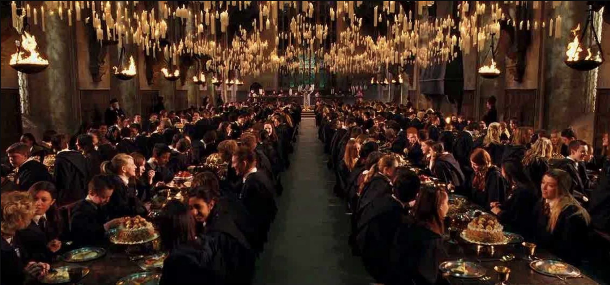
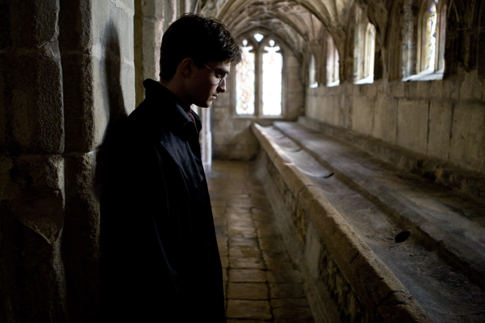

Location 01
Christ Church, Oxford University
This dining hall was the real-life model for the Hogwarts Great Hall. Filmmakers used its architecture as the blueprint for the movies. Fans can visit the actual room located within Christ Church College that inspired the most iconic location in the series.
Find on Map
Location 02
Hogwarts Express: Jacobite Steam Train
The iconic train journey has been made famous as the Hogwarts Express. While the Hogsmeade station is in Yorkshire, the train seen crossing the massive 21-arched bridge is the Jacobite Steam Train in the Scottish Highlands. Fans can ride this world-famous route across the Glenfinnan Viaduct — often called the greatest railway journey in the world.
Find on Map
Location 03
Hallways in Hogwarts: Lacock Village and Abbey
The iconic abbey and village have been used as the backdrop for Hogwarts and Godric's Hollow. The abbey's cloisters served as the school's hallways, while its historic rooms became Snape's classroom and the home of the Mirror of Erised. Nearby, fans can find the cottage used as Harry's parents' home.
Find on Map
Location 04
Hogwarts Library & Infirmary: The Bodleian Library
The iconic library and divinity school have been used as the Hogwarts Library and Infirmary. The historic Duke Humfrey's Library served as the place where Hermione researched, while the Gothic Divinity School became the wing where students recovered from spells and potions.
Find on Map
Location 05
The Gateway to Hogwarts — Platform 9¾: King's Cross Station
The iconic station has been the starting point for every Hogwarts journey. At King's Cross in London, fans can find the famous barrier at Platform 9¾, complete with a luggage trolley embedded in the wall. Right next door, the grand St Pancras Renaissance Hotel served as the visual entrance where Harry and Ron famously flew their car into the sky.
Find on Map